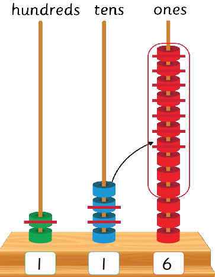

Exercise 5
Write the answer in each question.
1.
486
−225
2.
739
−418
3.
620
−304
4.
865
−442
5.
972
−351
6.
543
−212
7.
761
−340
8.
694
−273
9.
853
−431
Subtracting numbers horizontally by regrouping
Numbers can be subtracted horizontally by regrouping.
Example 1
243 − 127 =

64
64Question 4. 328 minus 215. Question 5. 776 minus 715. Question 6. 824 minus 221. Question 7. 624 minus 321. Question 8. 515 minus 102. Question 9. 345 minus 215. Question 10. 467 minus 115. Question 11. 349 minus 117. Question 12. 286 minus 123.4.- 322185–5.–- 7771656.- 822241–7.- 632241–8.- 511052–9.- 324155––- 416175–- 31419712.–- 218263Subtracting numbers horizontally by regrouping. Numbers can be subtracted horizontally by regrouping. Example 1. 243 minus 127. The counting frame starts with 2 beads in the hundreds column, 4 beads in the tens column, and 3 beads in the ones column. Regroup 1 ten as 10 ones. There are now 3 tens and 13 ones. Cross out 7 ones, leaving 6. Cross out 2 tens, leaving 1. Cross out 1 hundred, leaving 1. The remaining beads show 116.Subtracting numbers horizontally by regroupingNumbers can be subtracted horizontally by regrouping.Example 1243 - 127 =hundreds tens onesARITHMETICS PUPIL'S STD 2.indd 6406/11/2024 17:23